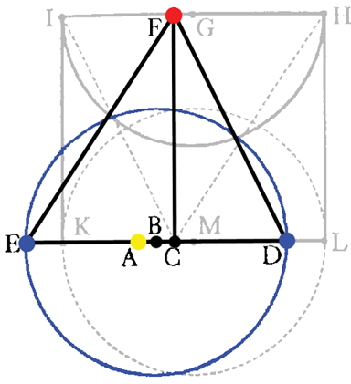

Chapter 23
It is therefore fitting that the halving of the eccentricity hold in the theory of the sun, which halving previously held for the eccentric of Mars. (p.315)

With the angles EFC and DFC found in chapter 22, Kepler uses trigonometry (the law of sines) to determine the distances of E and D from the equant, and thus to find the location of the true center of earth's orbit. Using this method, he determines that
CB = 1837,
but the distance of the equalizing point C, from the body of the sun A, is
CA = 3584, by Tycho.
Halving it gives:
½CA = 1792,
which is almost exactly CB. Thus, we have found a bisected eccentricity
BC ~ ½CA.
The Earth is no longer differentiated from the other planets by having a simple eccentric rather than a bisected eccentricity! If there is a type of motion common and universal to all the planets, might there also exist a universal cause for this motion?
| Next |